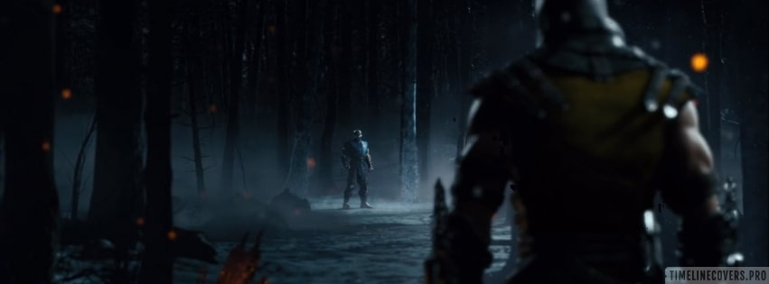

Mortal Kombat
Mortal Kombat sort sur bornes d'arcade en 1992 et est conçu par John Tobias et Ed Boon. Il copie
certaines conventions de Street Fighter II, mais recherche l'originalité au niveau du style. Il se
démarque par sa violence exagérée et des graphismes numérisés extraits de séquences d'acteurs filmés
pour plus de réalisme1. Enfin, toujours dans un souci d'attention portée à la violence, le jeu
ajoute des « Fatalités » qui ne changent strictement rien au combat mais ajoutent des cinématiques
sanglantes de torture de l'ennemi vaincu. La Mega Drive et la Super Nintendo accueillent des
versions édulcorées du jeu. Sur la Mega Drive, le jeu est censuré, mais le code ABACABB permet de
débloquer les scènes violentes du jeu original. Sur la Super Nintendo, le sang est coloré en gris
pour évoquer des gouttes de transpiration, et les fatalités les plus violentes sont supprimées.
Mortal Kombat II a un seul objectif pour Ed Boon : « il fallait qu'on fasse deux fois mieux que le
premier jeu ».
Cet objectif est justifié par le fait que le concurrent Capcom prépare Super Street Fighter II:
The New Challengers de son côté. Dans Mortal Kombat II, sorti sur arcade en novembre 1993, on passe
de sept à douze personnages jouables, avec beaucoup plus d'actions spéciales qu'auparavant. En
particulier, chaque personnage est maintenant doté de deux fatalités différentes. Le scénario est
aussi complètement retravaillé pour devenir beaucoup plus complexe que le premier4. Le jeu
compétitif prend de l'essor, les combos étant plus développés que dans le premier opus. Le jeu sort
en version non censurée sur la Mega Drive et sur la Super Nintendo, mais est assorti d'une notice
ESRB qui prévient les parents du contenu violent qu'il inclut. Entre 1993 et 1995, le jeu est
adapté à presque toutes les consoles de son époque, de la Mega-CD à la Game Boy.
Mortal Kombat 3 fait passer le jeu de douze à quinze personnages, dont sept nouveaux, très
appréciés par les joueurs. Cependant, les personnages de Scorpion, Kitana, Mileena et Baraka, entre
autres, sont ôtés du jeu, à la grande déception des joueurs des premières éditions5. Suivant la mode
de Killer Instinct, le jeu ajoute un système où une séquence de boutons permet de choisir une série
de coups sans nécessiter une rapidité d'action particulière6. Un bouton « course » est ajouté pour
rendre le jeu moins défensif2. Le jeu rencontre un succès satisfaisant, mais Midway espérait mieux
et se concentre sur une mise à jour, intitulée Ultimate Mortal Kombat 3 et sortie en 1996. La mise à
jour ramène les personnages Kitana, Mileena, Scorpion et Reptile, ainsi que Jade, personnage caché
non-jouable du deuxième jeu. Johnny Cage, Raiden et Baraka ne sont pas réintégrés au jeu.
Mortal Kombat 4 marque les débuts de la franchise dans l'univers des graphismes en 3D. Il sort sur
bornes d'arcade le 11 septembre 1997. Le jeu en lui-même semble satisfaire les fans de la licence,
mais c'est justement leur nombre qui diminue avec une perte générale d'intérêt pour l'ultra-violence
et la perte du réalisme des éditions précédentes. Le jeu sort ensuite sur PlayStation et Nintendo
64, où on lui reproche le manque de modernité de son système de jeu, en particulier par rapport au
nouveau concurrent SoulCalibur Mortal Kombat: Deadly Alliance marque un tournant pour la série, avec
beaucoup plus de budget et une modification complète du système de jeu. C'est aussi la modification
des conventions de nommage, qui passe des titres numérotés aux titres avec sous-titres7. Il ne sort
qu'en 2002, Midway ayant choisi de donner plus de temps que prévu à ses développeurs après l'échec
de Mortal Kombat 4 et du jeu dérivé Mortal Kombat Special Forces. Le jeu sort sur PlayStation 2,
Xbox et GameCube. Il reçoit des critiques très positives et vend plus d'un million d'exemplaires en
six semaines.
Mortal Kombat: Mystification (Mortal Kombat: Deception en anglais) sort en 2004 et se concentre
sur un gain de viabilité pour le jeu compétitif. Le jeu reçoit un très bon accueil et des très
bonnes notes de la presse spécialisée, et inclut énormément de contenu supplémentaire : plus de
personnages et surtout un mode Histoire beaucoup plus complet que dans les opus précédents de la
série.
Mortal Kombat: Armageddon sort en 2006 et ramène presque tous les personnages des cinq jeux
précédents, soit un cast de plus de 60 personnages jouables8. Le jeu est généralement apprécié, mais
également accusé d'être redondant avec les éditions précédentes : en particulier, il est développé
avec le même moteur que les deux précédents.
Mortal Kombat vs. DC Universe (2008) marque le début d'une nouvelle ère pour Mortal Kombat, y
compris par le partenariat avec DC Comics. Les Fatalités y sont rendues moins violentes en raison de
la présence de personnages d'une autre licence. Le jeu reçoit des bonnes critiques.

Mortal Kombat (MK9) sort en 2011. Si Ed Boon en est toujours le chef de projet, l'équipe
appartient désormais à WB Interactive. Les développeurs se renomment également en NetherRealm
Studios et travaillent à revenir aux origines de la série avec leur nouveau jeu9. Le jeu repasse en
format 2D et reçoit un accueil extrêmement positif.
Mortal Kombat X sort le 14 avril 2015 sur PlayStation 4 et Xbox One10. À sa sortie, le jeu
essuie de nombreuses critiques concernant la stabilité toute relative du jeu et de sa composante
multijoueur en ligne. Plusieurs patchs sortent dans un intervalle relativement court mais ne règlent
pas le problème : un patch en particulier supprime toutes les sauvegardes du jeu chez les joueurs.
Fin août 2015, Warner Bros. Interactive Entertainment annule la sortie des versions PlayStation 3 et
XBox 360. Le 20 janvier 2016, Mortal Kombat XL sort sur Xbox One et PlayStation 4 : le jeu est
identique à Mortal Kombat X mais les bugs sont réparés13.
Mortal Kombat 11 sort le 23 avril 2019 sur PlayStation 4, Xbox One, PC et Nintendo Switch14. Le jeu
réalise un très bon démarrage et reçoit un excellent accueil de la part des joueurs. Cependant, la
première mise à jour a lieu quelques jours après sa sortie, les joueurs se plaignant de la
difficulté du mode Tours du Temps. Devant le grand succès de Mortal Kombat 11, une extension au jeu
de base a été créée (nommée Aftermath). Elle sort le 26 mai 2020 et permet aux joueurs de découvrir
une suite au mode Histoire avec un scénario inédit.
Mortal Kombat 1 sort le 19 septembre 2023 sur PlayStation 5, Xbox Series, PC et Nintendo Switch
Vidéo Trailer Mortal Kombat 1
- Mortal Kombat (1992)
- Mortal Kombat II
- Mortal Kombat 3
- Ultimate Mortal Kombat 3
- Mortal Kombat Trilogy
- Mortal Kombat 4
- Mortal Kombat Gold
- Mortal Kombat Advance
- Mortal Kombat: Deadly Alliance
- Mortal Kombat: Tournament Edition
- Mortal Kombat: Deception
- Mortal Kombat: Armageddon
- Mortal Kombat: Unchained
- Mortal Kombat vs. DC Universe
- Mortal Kombat (2011)
- Mortal Kombat Arcade Kollection
- Mortal Kombat X
- Mortal Kombat 11
- Mortal Kombat 11: Aftermath and Ultimate
- Mortal Kombat 1